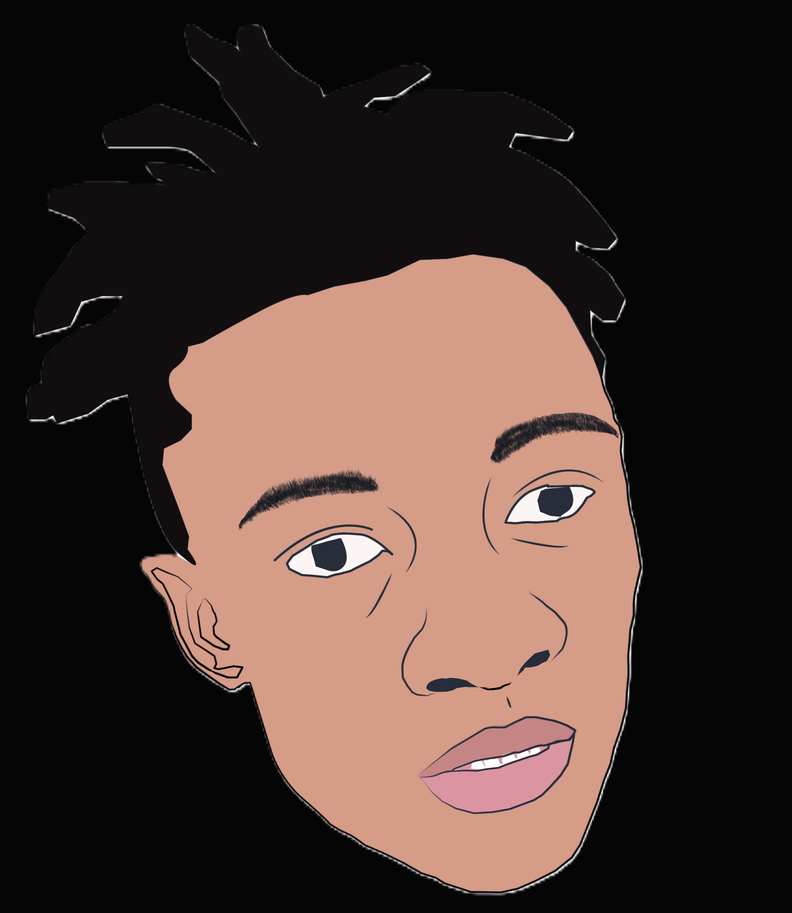

Fullstack learnership (Angular 16, TypeScript, Maven, MVC, JavaScript) — delivered LocalConnect SA (private, complete). Diploma in Computer Science, Tshwane University of Technology. I take ownership from design to deployment, ensuring solid backend integration and clean frontend.

Diploma in Computer Science
2022 – 2025 (third year) · Pretoria, SA
Exposure & mastery:
Completed real-world team project (LocalConnect SA) – code private but functionality verified.
Business discovery platform for South African local businesses. Users find, review, and trust local businesses; owners manage presence.
Key contributions: business UI, map integration, REST APIs with validation, frontend-backend integration, endpoint testing.
Inventory management system with Spring Boot MVC, Maven multi‑module, JPA, and Angular dashboard. Low stock alerts, role‑based access.
Repo will be public after Q2 2025.
Agile task board with drag‑drop, sprint buckets. Built with TypeScript, Angular 16, Node.js (Express) and MongoDB (plan).
Program coordinator
Ms. Lerato Dlamini
+27 (0) 12 345 6789
Verify LocalConnect SA, attendance, and fullstack proficiency.
CS department
Dr. K. Ndlovu (academic advisor)
ndlovuk@tut.ac.za (verify enrolment)
Diploma in Computer Science, in progress (third year).
linkedin.com/in/ofentse-molefe-704ab82b7
github.com/OfentseMolefe
molefe2ofentse98@gmail.com
Private repos accessible after reference request.